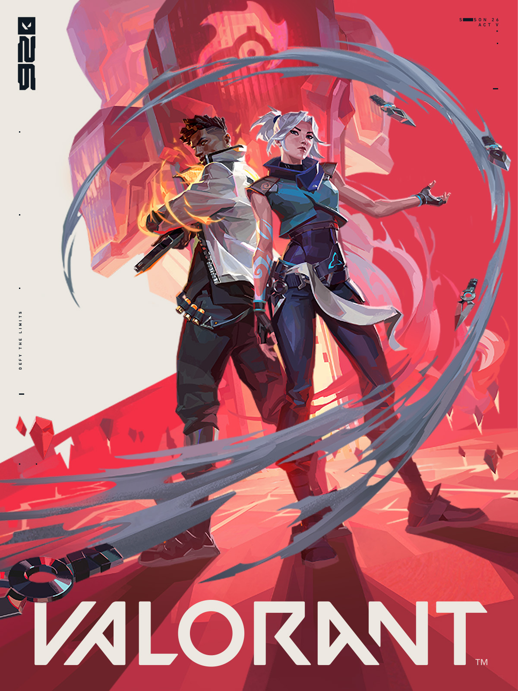

Bem-vindo ao site sobre VALORANT
Este é um pequeno site feito somente com HTML para apresentar informações básicas sobre o jogo VALORANT.

Áudio do projeto
Exemplo de música local utilizado no site:
Este é um pequeno site feito somente com HTML para apresentar informações básicas sobre o jogo VALORANT.

Exemplo de música local utilizado no site: